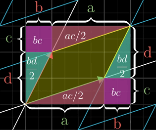
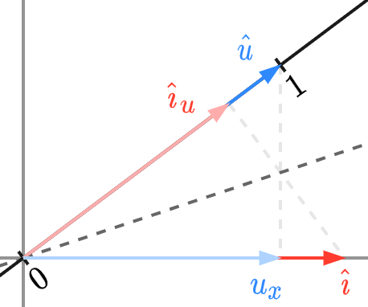

Essence of Linear Algebra1¶
1 Vectors, What Even Are They?¶
Vectors are the extension of numbers.
Difference between a vector and a point:
2 Linear Combinations, Span and Bases¶
Linear independent \(\Leftrightarrow\) Any one of the vectors is outside the span of the others.
3 Matrices as Linear Transformations¶
Transformation is a fancy word for function, but it suggests movement.
Linear transformation: all straight lines remain straight, and the origin remains its place.
In the lingo,
which suggests that, a vector remains the same linear combination of the transformed bases.
Therefore, in two-dimensional space, suppose
when applied linear transformation \(\mathscr{A}\), $ \hat{\imath}$ lands at \([\,a_{11}\ \ a_{21}\,]^\top\), \(\hat{\jmath}\) lands at \([\,a_{12}\ \ a_{22}\,]^\top\). That is
namely
For the bases,
It is the relation between linear transformation and matrix-vector multiplication.
By recording where the bases land when applying a linear transformation and packaging them into a matrix, we have all the information about this transformation.
Starting from a specified matrix, we can imagine what the whole space and all the vectors inside look like after the transformation. Conversely, intuitive knowledge of a transformation itself can be expressed as a matrix.
Particularly, if \(\mathscr{A}(\hat{\imath}),\,\mathscr{A}(\hat{\jmath})\) are linearly dependent, the whole 2-D space is squished onto the line where those two vectors sit, a.k.a. the span of them.
4 Matrix Multiplication as Composition¶
Applying two successive linear transformations \(\mathscr{A}_1\) and \(\mathscr{A}_2\) on a vector/space, we get a composition of linear transformations. Numerically, it is the multiplication of matrices corresponding to these transformations respectively.
Therefore, (square) matrix multiplication can be viewed as a series of linear transformations.
In 2-D space,
5 The Determinant¶
The determinant of a matrix represents in what scale the transformation squeezes or stretches the space.
- In 2-D space, the unit square that sits on \(\hat{\imath}\) and \(\hat{\jmath}\) is transformed into a parallelogram, with its area equals to the determinant.
- In 3-D space, the unit cube that sits on \(\hat{\imath}\), \(\hat{\jmath}\) and \(\hat{k}\) transforms into a parallelepiped, with its volume equals to the determinant.
For negative determinants, they are the result of inverting the orientation of space.
- In 2-D space, imagine flipping space over.
- In 3-D space, right-hand rule is involved.
In a word, the determinant equals to the factor by which the areas/volumes have been scaled.

If we apply two successive linear transformations, it is obvious that the factor by which the space have been scaled equals to the multiplication of the two determinants, namely
行阶梯式（row echelon form）具有以下形式:
其对空间的缩放比例即其行列式，等于其对原空间中单位超立方体的变换结果（对应矩阵任意前 \(k\) 列的 \(k\) 维图形均为将对应矩阵 \(k-1\) 列之图形沿第 \(k\) 列向量扫过的超柱体）之体积，等于每一列垂直于其之前诸列张成空间的分量的乘积，即主对角线诸项之乘积
高斯消元法（Gaussian elimination）可视为用行列式为 1 的矩阵与原矩阵相乘，故行列式的值未改变，通过高斯消元得到行阶梯式即可求出行列式.
6 Inverse Matrices, Column Space and Null Space¶
A system of linear equations
has its geometric interpretation that we are looking for a vector \(\mathbf{x}\) which lands on \(\mathbf{v}\) when applying the transformation \(A\) on it.
The solution for \(\mathbf{x}\) depends on whether the transformation \(A\) squishes space into a lower dimensional one, i.e., whether \(\det(A)\) equals to 0 or not.
In the case where \(\det(A)\neq 0\), there will always be one and only one solution and the finding process is actually playing the transformation in inverse. The inverse transformation corresponds to matrix \(A^{-1}\) which satisfies that
where
where \(I\) is called identity matrix, corresponding to identity transformation, which "does nothing".
Therefore, we have
And when we play this inverse transformation and follow \(\mathbf{v}\), the single unique solution for \(\mathbf{x}\) is obtained.
When \(\det(A)= 0\), the transformation squishes the space into a lower dimension, but there is no transformation that can unsquish space into a higher one, for a function cannot map a vector to multiple ones. That is to say, \(A^{-1}\) does not exist in this case. If vector \(\mathbf{v}\) is lucky enough to live on that lower-dimensional space, there will be infinite solutions for \(\mathbf{x}\), otherwise there won't be any solutions.
The number of dimensions in the output of the transformation is called the rank of the matrix.
Set of all possible \(A\mathbf{x}\) is called the column space of \(A\), i.e. the span of columns.
output space = set of all possible \(A\mathbf{x}\) = span of columns = column space
That is to say, rank is the number of dimensions in the column space. When the rank is as high as it can be, and equals the number of columns, we call the matrix full rank. Set of all vectors that land on the origin after transformation is called the null space or the kernel of the matrix.
When \(\det(A)\neq 0\), i.e. \(A\) is full rank, only \(\mathbf{0}\) lands on the origin.
When \(\det(A_{n\times n})= 0\), a space will land on the origin, its number of dimensions being \(n-\mathrm{rank}(A)\).
For a system of linear equations
its solution is the null space of \(A\).
6+ Nonsquare Matrices¶
Nonsquare matrices are transformations between dimensions.
For a \(m\times n\) matrix
the inputs are \(n\) bases, and the outputs are \(n\) \(m\)-dimensional vectors, which can be interpreted as a linear transformation from an \(n\)-dimensional space to an \(m\) (or lower)-dimensional space.
7 Dot Products and Duality¶
Matrix \([a_1, a_2, \cdots , a_n]\) corresponds to a transformation from \(n\)-dimensional to one-dimensional, where \(\hat{e}_1\) lands on \(a_1\), \(\hat{e}_2\) lands on \(a_2\), ... , \(\hat{e}_n\) lands on \(a_n\).
Relation between matrix-vector product and dot product¶
Suppose there is a tilted number line in a space, and for simplicity, the space is 2-dimensional. The number 0 on that line remains in the origin and the base (with the same length of the bases in the original space) being
For matrix-vector product:¶
Imagine a linear transformation that squishes the plane is onto that number line and \(\hat{\imath}\) lands at \(u_x\), \(\hat{\jmath}\) lands at \(u_y\). In this transformation, vector \(\mathbf{v} = \big[x\quad y\big]^\top\) lands on
Note
Yes, \(\big[u_x\quad u_y\big]\) itself corresponds to another linear transformation where all points in the space are squished onto \(x\) axis, but the calculation above also integrates a change of bases, which rotates the \(x\) axis to the tilted number line. Without this change of bases, the transformation described would be \(\begin{bmatrix}u_x^2 & u_x u_y \\ u_x u_y & u_y^2\end{bmatrix}\). Next, we rotate the space back to horizontal, namely by \(\operatorname{rot}(-\arg \hat{u}) = \begin{bmatrix}\cos (-\arg\hat{u}) & - \sin (-\arg\hat{u}) \\ -\sin (-\arg\hat{u}) & \cos (-\arg\hat{u})\end{bmatrix} = \begin{bmatrix}u_x & u_y \\ -u_y & u_x\end{bmatrix}\). Multiply this rotation matrix to the former transformation matrix, and the composition is \(\begin{bmatrix}u_x & u_y \\ 0 & 0\end{bmatrix}\).
For dot product:¶
Project \(\hat{\imath}\) to \(\hat{u}\), according to symmetry shown in the figure below, \(\hat{\imath}_u=u_x\). Similarly, \(\hat{\jmath}_u=u_y\).

Therefore, projection of \(\mathbf{v}\) on \(\hat{u}\)
This is why the dot product with a unit vector can be interpreted as projecting the vector onto to the span of that unit vector and taking the (directed) length.
Duality¶
A vector is the physical embodiment of a linear transformation.
A linear transformation from space to the number line can be just defined by projecting space onto that number line, instead of numerical dot products or vectors. Because this transformation is linear, it is necessarily described by some \(1\times n\) matrix. And since multiplying this matrix is the same as taking the associated dot product, the transformation is inescapably related to some vector.
8 Cross Product in the Light of Linear Transformations¶
In 2-D space, \(|\mathbf{v\times w}|\) equals to area of the parallelogram determined by these vectors.
In the light of linear transformation, when \(\hat{\imath}\) lands on \(\mathbf{v}\) and \(\hat{\jmath}\) lands on \(\mathbf{w}\), area of the parallelogram equals to the determinant, therefore,
In 3-D space,
Since function
is linear, and its output is a number. It necessarily associates with a linear transformation whose correspondent is a vector, according to duality.
It is computationally evident that
For convenience, define
therefore, the vector \(\mathbf{p}\) satisfies that
and geometrically,
Therefore \(\|\mathbf{p}\|\) equals to area of parallelogram spanned on \(\mathbf{v,w}\), and \(\mathbf{p}\) obeys the right-hand rule. So it becomes evident that
Note that
9 Change of Basis¶
A change of basis is equivalent to a linear transformation.
Suppose in coordinate system \(S\), the bases are
and another group of bases that span coordinate system \(S'\), from the perspective of \(S\), are
In coordinate system \(S'\), vector
If we apply linear transformation
on \(S\), some vector \(\mathbf{w}=w_x \hat{\imath}+w_y \hat{\jmath}\) will land on \(\mathbf{w}'\). According to linearity, \(\mathbf{w}\) will remain the same combination of the bases, which is
That is, \(\mathbf{w}\) in \(S\) and \(\mathbf{w}'\) in \(S'\) has the same representation. And from the perspective of each coordinate system,
So a translation from \(S'\) to \(S\) is obtained:
In the simplest case, \(\hat{u} = \begin{bmatrix}u_1\\ u_2\end{bmatrix}_{(S)} = \begin{bmatrix}1\\ 0\end{bmatrix}_{(S')}\).
这样，我们能将两个坐标系之间的关系记为
In terms of linear transformations, how a transformation is expressed is related to the bases. Here are the steps to describe the same transformation in a different coordinate systems:
Suppose a linear transformation \(M\) in coordinate system \(S\) is applied to some vector \(\mathbf{w}\) in \(S'\),
- first translate \(\mathbf{w}\) to \(S\) by multiplying \(A\) to \(\mathbf{w}\);
- since we've got \(A\mathbf{w}\) in \(S\), apply the transformation by multiplying \(M\) to \(A\mathbf{w}\);
- translate it back to \(S'\) by multiplying \(A^{-1}\) to it;
- finally we got \(A^{-1}MA\mathbf{w}\).
To sum up,
10 Eigenvectors and Eigenvalues¶
An eigenvector of a linear transformation is a non-zero vector that changes only a scalar factor when that transformation is applied to it. It is defined as
where non-zero vector \(\mathbf{v}\) is an eigenvector of \(A\), and \(\lambda\in\mathbb{R}\) is the eigenvalue associated to it.
When applying the transformation, each eigenvector is scaled by the factor of its associated eigenvalue, while other vectors are all knocked off their original directions.
An equivalence of the equation above
is called the characteristic equation.
In other words, non-zero vector \(\mathbf{v}\) becomes zero when applying linear transformation \(A-\lambda I\) to it, and the only way to do it is that matrix squeezes the space into a lower-dimensional one, therefore
Solve this equation, and if an eigenvector exists, all the vectors on the line spanned by it would be eigenvectors too.
When all the basis vectors happen to be eigenvectors, they are called eigenbases, and the corresponding transformation matrix would be diagonal. Therefore a way to interpret a diagonal matrix is that all the bases are eigenvectors, with the diagonal entries of this matrix being their eigenvalues.
A diagonal matrix has a nice property that
which indicates that if the eigenvectors of matrix \(M\) span the whole space, we can change the bases to the eigenvectors, and the change-of-basis matrix is
where \(\mathbf{v}_i\) are the eigenvectors.
Matrix \(A^{-1}MA\) would express the same transformation in the eigenbasis coordinate system, and it is guaranteed to be diagonal with its corresponding eigenvalues down that diagonal, because the vectors are only scaled from the perspective of that coordinate system.
When raising a non-diagonal matrix to some power, first change it into its eigenbases, and then compute that power in the new system, then convert back to the original system.
When a matrix does not have enough eigenvectors to span the full space, this approach fails to work.
11 Abstract Vector Spaces¶
Since functions also have linear properties:
the concept of vectors can be expanded to functions.
The derivative is an example of linear transformation (function) of a function, because it is linear,
and it transforms one function into another.
In other words, the differential operator and the derivative operator are linear.
To express derivatives in the form of matrices, for example in the space of polynomials, we choose
as basis functions, and all polynomials can be described as the linear combinations of the basis functions:
Since
the derivative operator matrix
Therefore,
Almost all linear algebra concepts have their alternate names when applied to functions:
In conclusion, vectors can be far more abstract, the forms they take do not matter. It is an intangible notion that maths abstracts all its embodiments into.